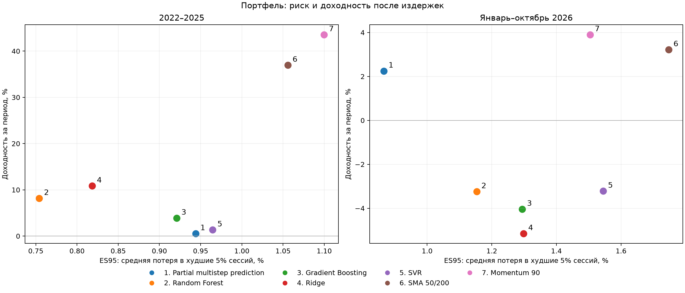
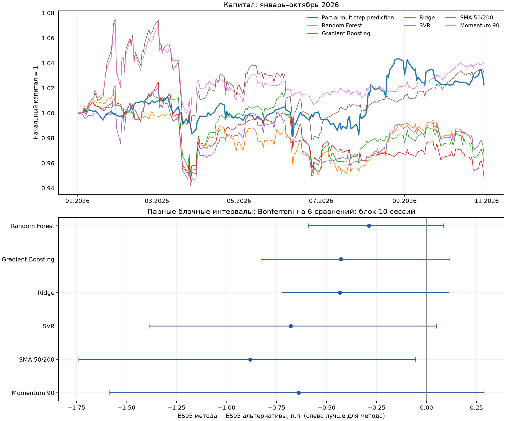

Partial multistep prediction (Gromov–Baranov): дневная торговая адаптация на акциях, облигациях и золоте.
Январь–октябрь 2026: доходность метода +2,25%, ES95 0,866%, просадка 3,15%. SMA и momentum заработали больше (+3,22% и +3,90%), но имели ES95 1,748% и 1,504%, просадку 9,00% и 6,77%. Все четыре ML-модели за этот период убыточны и имеют более высокие ES, просадку и волатильность.
На 2022–2025 годах картина другая: Random Forest дал +8,17% против +0,55% у метода, ES95 0,754% против 0,944% и просадку 6,26% против 12,02%.
Исходный эксперимент и учёт сделок · Метрики портфелей · Все инструменты и методы · Интервалы · Протокол · Хеши входов и кода · Аудит
Шесть кандидатов заданы до их нового сравнения. Прибыльность проверяется только на 2021 году: чистая доходность портфеля выше нуля и средняя фактическая доля капитала в рынке не менее 10%. Все шесть прошли правило; флаги и их хеш сохранены до тестовых бэк-тестов. Убыточные строки теста не исключены. Положительная доходность одного года не доказывает положительное математическое ожидание.
| Альтернатива | Доходность 2021 | Доля в рынке 2021 | Прошла правило |
|---|---|---|---|
| Random Forest | 0.93% | 29.12% | да |
| Gradient Boosting | 2.37% | 38.38% | да |
| Ridge | 3.68% | 21.92% | да |
| SVR | 0.10% | 43.68% | да |
| SMA 50/200 | 9.91% | 52.07% | да |
| Momentum 90 | 8.33% | 56.31% | да |
Это исследовательское приложение, добавленное после знакомства с исходными результатами вне криптовалют. Периоды 2022–2025 и январь–октябрь 2026 не объявляются новым независимым подтверждающим тестом. Настройки и рынки по их новым результатам не менялись, гиперпараметры альтернатив не подбирались.
| Метод | Доходность | ES95 за день | Макс. просадка | Волатильность / год | Средняя доля в рынке |
|---|---|---|---|---|---|
| Partial multistep prediction | 2.25% | 0.87% | 3.15% | 6.22% | 43.43% |
| Random Forest | -3.24% | 1.15% | 6.60% | 7.35% | 36.80% |
| Gradient Boosting | -4.04% | 1.29% | 6.31% | 7.28% | 37.05% |
| Ridge | -5.15% | 1.30% | 7.60% | 7.38% | 32.52% |
| SVR | -3.22% | 1.54% | 7.87% | 9.00% | 38.21% |
| SMA 50/200 | 3.22% | 1.75% | 9.00% | 10.11% | 54.01% |
| Momentum 90 | 3.90% | 1.50% | 6.77% | 8.84% | 41.06% |
| Buy-and-hold | 2.64% | 1.86% | 8.70% | 12.06% | 93.55% |
| Причинный контроль | -0.10% | 0.57% | 3.72% | 3.93% | 38.64% |
| Геометрия статьи | -1.48% | 0.70% | 3.71% | 4.73% | 26.95% |
ES95 — средняя потеря в худших ceil(5% × n) торговых сессиях, минимум ноль; меньше — лучше. Волатильность годовая, просадка по закрытиям. Доходность за весь указанный период после 15 bps издержек с каждой стороны и с дивидендами; без налогов и процентов на cash. Для 2026 имеется 209 сессий.
Доля капитала в рынке у метода 43,43%: выше четырёх ML-моделей (32,52–38,21%) и momentum (41,06%), ниже SMA (54,01%). Поэтому все различия нельзя объяснить только меньшей экспозицией метода. Это также не доказывает способность распознавать риск: состав позиций и их время различаются.

Начальный капитал распределён по 1/15 между AAPL, MSFT, XOM, SPY и QQQ; по 1/3 — между TLT и GLD. Каждая стратегия торгует в семи отдельных субсчетах. Между инструментами капитал не перераспределяется; их веса дрейфуют. Общий капитал равен сумме стоимостей субсчетов, доходности и ES вычисляются уже из этой суммы. Доля в рынке взвешена текущей стоимостью субсчетов. Каждый оцениваемый период начинается с нового капитала и денежной позиции, позиции закрываются на последнем Open; это отдельные эксперименты, не одна непрерывная инвестиция.
Это риск портфеля с учётом совместного движения активов. В исходном отчёте оценивалось среднее инструментальных ES с равными весами классов. Эти два показателя различаются; их численные значения нельзя подменять друг другом.
Парный круговой блочный bootstrap использует 10 000 выборок и одинаковые сессии у всех стратегий. Основной блок — 10 сессий; 5 и 20 — заранее заданные проверки чувствительности. Для шести сравнений применена поправка Bonferroni: приблизительные интервалы 99,167% каждый, семейный уровень 95% для одного периода и блока. Это не общая поправка на все исследования репозитория, оба периода или все длины блока.
В 2026 основной интервал исключает ноль только против SMA: разность ES −0,882 п.п., интервал [−1,737; −0,054]. При блоке 20 он включает ноль. Остальные пять основных интервалов тоже включают ноль. В 2022–2025 преимущество Random Forest по ES видно при блоках 5/10, но не отделяется от нуля при 20. Уверенного устойчивого превосходства по риску эти данные не устанавливают.

| Период | Альтернатива | Блок, сессий | Разность ES, п.п. | Нижняя граница | Верхняя граница |
|---|---|---|---|---|---|
| historical | Random Forest | 5 | +0.190 | +0.032 | +0.329 |
| historical | Gradient Boosting | 5 | +0.023 | -0.139 | +0.161 |
| historical | Ridge | 5 | +0.126 | -0.023 | +0.276 |
| historical | SVR | 5 | -0.021 | -0.155 | +0.102 |
| historical | SMA 50/200 | 5 | -0.112 | -0.362 | +0.114 |
| historical | Momentum 90 | 5 | -0.156 | -0.423 | +0.077 |
| historical | Random Forest | 10 | +0.190 | +0.008 | +0.349 |
| historical | Gradient Boosting | 10 | +0.023 | -0.147 | +0.172 |
| historical | Ridge | 10 | +0.126 | -0.049 | +0.298 |
| historical | SVR | 10 | -0.021 | -0.162 | +0.114 |
| historical | SMA 50/200 | 10 | -0.112 | -0.372 | +0.138 |
| historical | Momentum 90 | 10 | -0.156 | -0.445 | +0.102 |
| historical | Random Forest | 20 | +0.190 | -0.004 | +0.365 |
| historical | Gradient Boosting | 20 | +0.023 | -0.158 | +0.182 |
| historical | Ridge | 20 | +0.126 | -0.052 | +0.322 |
| historical | SVR | 20 | -0.021 | -0.161 | +0.116 |
| historical | SMA 50/200 | 20 | -0.112 | -0.406 | +0.165 |
| historical | Momentum 90 | 20 | -0.156 | -0.479 | +0.130 |
| holdout | Random Forest | 5 | -0.287 | -0.573 | +0.050 |
| holdout | Gradient Boosting | 5 | -0.428 | -0.817 | +0.118 |
| holdout | Ridge | 5 | -0.432 | -0.724 | +0.026 |
| holdout | SVR | 5 | -0.679 | -1.432 | +0.008 |
| holdout | SMA 50/200 | 5 | -0.882 | -1.765 | -0.154 |
| holdout | Momentum 90 | 5 | -0.638 | -1.583 | +0.181 |
| holdout | Random Forest | 10 | -0.287 | -0.590 | +0.084 |
| holdout | Gradient Boosting | 10 | -0.428 | -0.828 | +0.116 |
| holdout | Ridge | 10 | -0.432 | -0.723 | +0.111 |
| holdout | SVR | 10 | -0.679 | -1.383 | +0.049 |
| holdout | SMA 50/200 | 10 | -0.882 | -1.737 | -0.054 |
| holdout | Momentum 90 | 10 | -0.638 | -1.584 | +0.287 |
| holdout | Random Forest | 20 | -0.287 | -0.575 | +0.091 |
| holdout | Gradient Boosting | 20 | -0.428 | -0.833 | +0.135 |
| holdout | Ridge | 20 | -0.432 | -0.737 | +0.200 |
| holdout | SVR | 20 | -0.679 | -1.429 | +0.151 |
| holdout | SMA 50/200 | 20 | -0.882 | -1.833 | +0.151 |
| holdout | Momentum 90 | 20 | -0.638 | -1.704 | +0.430 |
| Метод | Доходность | ES95 за день | Макс. просадка | Волатильность / год | Средняя доля в рынке |
|---|---|---|---|---|---|
| Partial multistep prediction | 0.55% | 0.94% | 12.02% | 6.45% | 35.69% |
| Random Forest | 8.17% | 0.75% | 6.26% | 5.06% | 22.93% |
| Gradient Boosting | 3.90% | 0.92% | 13.58% | 6.36% | 36.20% |
| Ridge | 10.84% | 0.82% | 7.57% | 5.40% | 21.77% |
| SVR | 1.36% | 0.96% | 17.47% | 6.44% | 41.85% |
| SMA 50/200 | 36.97% | 1.06% | 6.10% | 7.28% | 56.33% |
| Momentum 90 | 43.56% | 1.10% | 6.43% | 7.75% | 59.38% |
| Buy-and-hold | 56.15% | 1.49% | 17.48% | 10.85% | 92.66% |
| Причинный контроль | 5.43% | 0.74% | 9.77% | 5.06% | 34.49% |
| Геометрия статьи | -2.68% | 0.76% | 12.21% | 5.04% | 25.39% |
| Метод | Доходность | ES95 за день | Макс. просадка | Волатильность / год | Средняя доля в рынке |
|---|---|---|---|---|---|
| Partial multistep prediction | 0.13% | 0.76% | 3.44% | 4.61% | 30.02% |
| Random Forest | 0.93% | 0.72% | 5.25% | 4.89% | 29.12% |
| Gradient Boosting | 2.37% | 0.76% | 5.49% | 5.20% | 38.38% |
| Ridge | 3.68% | 0.64% | 4.83% | 4.17% | 21.92% |
| SVR | 0.10% | 0.79% | 6.26% | 5.36% | 43.68% |
| SMA 50/200 | 9.91% | 0.82% | 3.12% | 6.12% | 52.07% |
| Momentum 90 | 8.33% | 0.93% | 3.86% | 6.55% | 56.31% |
| Buy-and-hold | 11.31% | 1.17% | 6.08% | 8.57% | 92.38% |
| Причинный контроль | 2.63% | 0.43% | 1.56% | 2.75% | 23.66% |
| Геометрия статьи | -0.75% | 0.40% | 2.55% | 2.64% | 14.72% |
Random Forest, HistGradientBoosting, Ridge и SVR предсказывают доходность Close через пять сессий. Признаки: log-momentum 1/5/20/60, волатильность log-return 20/60 и объём относительно среднего за 20 сессий. Поквартальное обучение использует предыдущие 2520 сессий; последние пять origins исключены, чтобы все метки предшествовали началу квартала. StandardScaler для Ridge/SVR обучается только на train. Параметры полностью перечислены в протоколе; настроек по тесту нет. Это фиксированные представители семейств, не лучшие возможные версии моделей.
SMA50/200 и momentum90 — две стратегии прогноза направления по тренду, а не обучаемые регрессоры. Buy-and-hold, сглаженный причинный контроль и контроль с геометрией статьи добавлены для контекста. Основная модель использует ранее выбранные настройки мотивов/Wishart и отказов; дневной train и горизонт — явная адаптация. Торговое правило отсутствует в исходной статье и не выдается за её результат.
Решения принимаются после последнего закрытия каждой недели, исполняются на следующем реальном Open. Для регрессоров и основного метода прогноз роста выше 0,3% даёт целевую позицию 95%, иначе cash; позиция держится до смены сигнала. У трендовых стратегий собственное фиксированное условие направления. Дивиденды, сплиты, праздничные сессии и допущения поставщика совпадают с исходным экспериментом.
| Инструмент | Метод | Доходность | ES95 за день | Макс. просадка | Волатильность / год | Средняя доля в рынке |
|---|---|---|---|---|---|---|
| AAPL | Partial multistep prediction | 5.51% | 0.92% | 5.51% | 6.56% | 15.00% |
| AAPL | Random Forest | 16.51% | 2.60% | 8.88% | 18.36% | 59.14% |
| AAPL | Gradient Boosting | 10.48% | 2.96% | 12.62% | 19.85% | 63.73% |
| AAPL | Ridge | 14.94% | 3.28% | 12.17% | 21.73% | 78.34% |
| AAPL | SVR | 21.54% | 2.40% | 8.12% | 17.66% | 58.74% |
| AAPL | SMA 50/200 | 26.62% | 3.54% | 12.14% | 24.44% | 94.29% |
| AAPL | Momentum 90 | 13.36% | 3.49% | 12.13% | 22.21% | 74.78% |
| AAPL | Buy-and-hold | 26.62% | 3.54% | 12.14% | 24.44% | 94.29% |
| AAPL | Причинный контроль | 7.48% | 0.65% | 2.50% | 5.01% | 14.70% |
| AAPL | Геометрия статьи | -5.73% | 1.56% | 10.17% | 8.23% | 17.27% |
| MSFT | Partial multistep prediction | 9.47% | 2.59% | 16.95% | 24.73% | 50.35% |
| MSFT | Random Forest | 0.44% | 3.46% | 24.74% | 23.76% | 64.26% |
| MSFT | Gradient Boosting | 10.97% | 2.95% | 20.62% | 27.38% | 58.46% |
| MSFT | Ridge | 1.40% | 2.89% | 19.25% | 22.84% | 64.87% |
| MSFT | SVR | 8.30% | 3.10% | 17.38% | 22.01% | 58.96% |
| MSFT | SMA 50/200 | 3.76% | 1.63% | 7.74% | 10.18% | 23.67% |
| MSFT | Momentum 90 | 9.55% | 1.77% | 4.84% | 11.50% | 30.96% |
| MSFT | Buy-and-hold | 10.49% | 4.02% | 25.34% | 32.75% | 93.35% |
| MSFT | Причинный контроль | 16.57% | 2.25% | 14.92% | 19.59% | 52.11% |
| MSFT | Геометрия статьи | 13.21% | 3.06% | 20.79% | 26.32% | 40.89% |
| XOM | Partial multistep prediction | 7.07% | 2.21% | 9.18% | 12.78% | 20.00% |
| XOM | Random Forest | 24.69% | 1.64% | 4.96% | 11.53% | 26.37% |
| XOM | Gradient Boosting | 5.31% | 2.53% | 10.54% | 15.60% | 39.53% |
| XOM | Ridge | -10.59% | 2.44% | 18.82% | 13.18% | 24.05% |
| XOM | SVR | 22.97% | 2.16% | 5.82% | 14.97% | 37.28% |
| XOM | SMA 50/200 | 48.03% | 3.63% | 19.20% | 26.10% | 93.94% |
| XOM | Momentum 90 | 25.27% | 3.64% | 21.57% | 23.90% | 74.18% |
| XOM | Buy-and-hold | 48.03% | 3.63% | 19.20% | 26.10% | 93.94% |
| XOM | Причинный контроль | 7.10% | 1.00% | 6.03% | 7.28% | 20.17% |
| XOM | Геометрия статьи | -7.82% | 1.97% | 13.62% | 10.05% | 10.90% |
| SPY | Partial multistep prediction | 5.71% | 0.96% | 5.24% | 6.69% | 15.43% |
| SPY | Random Forest | 1.78% | 1.05% | 4.25% | 6.72% | 28.17% |
| SPY | Gradient Boosting | -3.10% | 1.33% | 7.25% | 7.59% | 28.61% |
| SPY | Ridge | 0.41% | 1.23% | 7.31% | 7.46% | 28.60% |
| SPY | SVR | 4.48% | 1.20% | 5.86% | 7.61% | 30.46% |
| SPY | SMA 50/200 | 10.81% | 1.60% | 8.44% | 12.22% | 94.04% |
| SPY | Momentum 90 | 6.91% | 1.47% | 4.28% | 10.89% | 83.23% |
| SPY | Buy-and-hold | 10.81% | 1.60% | 8.44% | 12.22% | 94.04% |
| SPY | Причинный контроль | 4.50% | 0.38% | 1.66% | 2.73% | 15.32% |
| SPY | Геометрия статьи | 0.09% | 1.04% | 4.03% | 6.14% | 12.73% |
| QQQ | Partial multistep prediction | -3.89% | 1.90% | 9.33% | 10.65% | 24.08% |
| QQQ | Random Forest | -0.21% | 2.05% | 11.15% | 14.38% | 60.94% |
| QQQ | Gradient Boosting | 5.92% | 2.44% | 10.42% | 16.52% | 60.44% |
| QQQ | Ridge | 5.96% | 2.07% | 9.65% | 16.06% | 65.43% |
| QQQ | SVR | -0.77% | 2.01% | 9.99% | 13.88% | 49.07% |
| QQQ | SMA 50/200 | 11.98% | 2.49% | 11.14% | 19.72% | 94.33% |
| QQQ | Momentum 90 | 2.46% | 2.38% | 10.72% | 17.75% | 77.49% |
| QQQ | Buy-and-hold | 11.98% | 2.49% | 11.14% | 19.72% | 94.33% |
| QQQ | Причинный контроль | 6.20% | 0.65% | 2.61% | 4.70% | 19.79% |
| QQQ | Геометрия статьи | -6.05% | 1.79% | 14.05% | 10.77% | 35.44% |
| TLT | Partial multistep prediction | -3.29% | 1.28% | 9.49% | 8.97% | 82.32% |
| TLT | Random Forest | -1.66% | 0.16% | 1.66% | 1.24% | 2.27% |
| TLT | Gradient Boosting | -3.69% | 0.77% | 5.06% | 3.90% | 13.63% |
| TLT | Ridge | 0.00% | 0.00% | 0.00% | 0.00% | 0.00% |
| TLT | SVR | -1.75% | 0.80% | 3.69% | 4.17% | 13.18% |
| TLT | SMA 50/200 | -4.19% | 0.82% | 5.49% | 4.26% | 17.71% |
| TLT | Momentum 90 | -1.56% | 0.34% | 2.65% | 2.18% | 6.36% |
| TLT | Buy-and-hold | -2.90% | 1.27% | 11.63% | 9.21% | 92.39% |
| TLT | Причинный контроль | -3.54% | 1.09% | 9.99% | 7.69% | 74.68% |
| TLT | Геометрия статьи | -3.86% | 1.07% | 5.56% | 6.36% | 39.47% |
| GLD | Partial multistep prediction | 5.26% | 2.10% | 8.20% | 13.18% | 24.08% |
| GLD | Random Forest | -16.71% | 3.07% | 19.32% | 19.41% | 63.00% |
| GLD | Gradient Boosting | -14.35% | 2.99% | 20.87% | 16.75% | 47.64% |
| GLD | Ridge | -17.88% | 3.35% | 24.78% | 18.41% | 45.40% |
| GLD | SVR | -19.21% | 4.06% | 23.62% | 24.26% | 55.84% |
| GLD | SMA 50/200 | -6.39% | 4.10% | 25.13% | 24.85% | 56.50% |
| GLD | Momentum 90 | 1.76% | 3.90% | 18.41% | 22.93% | 44.26% |
| GLD | Buy-and-hold | -10.76% | 4.18% | 26.09% | 28.46% | 94.14% |
| GLD | Причинный контроль | -5.13% | 1.14% | 8.13% | 6.21% | 18.20% |
| GLD | Геометрия статьи | 0.67% | 1.59% | 5.85% | 9.19% | 17.72% |
Полная таблица, включая 2021 и 2022–2025, сохранена в instrument_metrics.csv. Панель состоит из известных сохранившихся инструментов; результат не распространяется автоматически на все акции. Допущения о выплатах дивидендов, издержках и бесплатном cash сохраняются. Дополнительных тестов издержек для всех новых ML-моделей в этом приложении нет.
Повторно проверены 210 бэк-тестов, 30 портфелей, структура и причинные границы 8512 прогнозов. Сохранённые сделки сверены с Open, комиссиями и дивидендами; портфельные кривые пересобраны из субсчетов, риск независимо пересчитан. 98 общих кривых совпали с исходным экспериментом точно. Read-only проверка GPT Astra подтверждает порядок validation/test и способ сборки портфелей.
Отдельный повторный запуск заново обучил все четыре ML-модели без их прогнозных кэшей. Максимальное отличие прогнозной доходности — ≈1,04 × 10⁻¹⁷; targets, сделки, кривые капитала, метрики и bootstrap-интервалы воспроизвелись точно при численном чтении CSV. Проверены 1128 CSV-файлов. Основное исследование отдельно воспроизведено из сохранённых прогнозов и снимков данных. Общая проверка: 92 теста пройдены, lint и форматирование пройдены.
bash research/trading/noncrypto/reproduce.sh
Сценарий восстанавливает сохранённые снимки данных и запускает оба исследования, аудит и отчёты. Чтобы заново обучить четыре альтернативных ML-модели, удалите их кэши predictive/*/forecasts.csv в отдельной копии репозитория перед запуском. Хеши исходного кода и протокола должны совпасть.